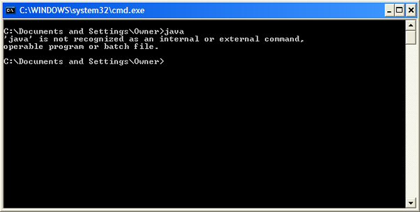
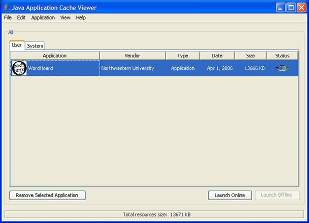
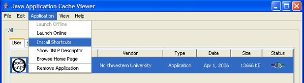

|
|
|
WordHoard runs on Microsoft Windows systems, on Macintosh OS X systems, and on most UNIX systems.
If you use Windows and the Early Greek Epic corpus, we recommend Windows XP or later. While Windows 2000 and other older versions of Windows work with WordHoard, some of the Greek characters do not display properly in all contexts in the program on these older systems, due to errors in the Windows "Palatino Linotype" font that were corrected in XP and later systems.
On the Macintosh, WordHoard requires Mac OS X version 10.2 or later. It does not work on Classic Mac OS (Mac OS 9 systems and earlier) or on Mac OS X 10.0.x or 10.1.x.
WordHoard requires a minimum screen size of 1024 by 768 pixels. The bigger your screen the better.
WordHoard should run on any reasonably modern Mac or PC. Its disk space requirements are modest. It likes lots of memory, the more the better. One gigabyte is our recommended minimum.
WordHoard requires a fast Internet connection. DSL and cable modem connections are fine, but a dialup modem connection is inadequate.
WordHoard is a Java application, so you need to have Java installed on your computer. We require Java version 1.4 or later.
For Mac OS X version 10.3 and above, Java 1.4 is built-in and you don't need to do anything.
For Mac OS X version 10.2.x, if you don't already have Java 1.4 installed, you should run Software Update to upgrade your Java package to version 1.4.
For Windows systems, we recommend Sun Microsystem's standard Java
distribution. If you don't know if you have this on your computer, use the
"Run" command in the "Start" menu, type "cmd", and press
the OK button. A command prompt window appears. Type the following command:
java -version
If you have Java installed on your computer, you will see the version (build) number. Our sample system in the screen shot below has Java 1.5 release 6.

If you do not have Java installed, or it is installed incorrectly, you will
see an error message telling you that java is an unrecognized
command.

If you don't have Java installed at all, or if your version of Java is earlier than 1.4, or if you have problems when you try to run WordHoard, go to Sun's web site and download and install Sun's latest version of Java for Windows. The latest version as of this writing is Version 6 Update 17 (aka Java 1.6 update 17).
For best results, if you already have an old version of Java on your Windows computer, remove the old version before you install the new version. Run the "Add or Remove Programs" control panel and remove both "Java 2 Runtime Environment" and "Java Web Start".
UNIX users should check Sun's web site for the proper version of Java for their version of UNIX.
For Linux users, we recommend Sun's JRE 6 version of Java. This version fixes a bug in earlier Linux releases which sometimes caused unexpected internal errors in WordHoard.
WordHoard selects appropriate fonts on your system to display works in the Roman alphabet (used by the English language corpora) and in the Polytonic Greek alphabet (used by the Early Greek Epic corpus). Both Mac OS X and Windows have built-in system fonts that contain all the characters WordHoard needs.
You might like to try the Gentium font, available at the Gentium Web Site. Gentium was designed for use with multilingual applications like WordHoard. You can download free versions for the Mac, Windows, and Linux. If you have Gentium installed on your system, WordHoard uses it by default.
If you use a Linux system, you should install Gentium. On most Linux systems, the built-in fonts cannot display all of the characters used by WordHoard, especially the many Polytonic Greek accented letters.
See also: Font Preferences
We use a Java technology named "Web Start" to distribute and run WordHoard. To run the program for the first time, click the following link:
When Web Start downloads WordHoard to your computer, it saves a copy in a special system "cache" directory on your hard drive. The next time you run the program, Web Start runs it directly from the cache, so you don't have to wait for it to download again.
Each time you run WordHoard, Web Start checks to see if there is a new version available. If there is, the new version is automatically downloaded. So you are always kept up-to-date. You don't have to worry about checking for new versions yourself, downloading them, or running any kind of installer.
When Web Start is downloading files, it presents a progress dialog that looks like the following:

The first time you run WordHoard, a security warning will appear. Click the "Trust" button. On some systems, the messages and buttons may be labelled differently, and you may need to click a button named "Start" or "OK".

On some systems, you won't see the warning again after the first time you run the program. On other systems, you may need to take some kind of explicit action to get rid of the warning. For example, on Mac systems which present the security warning pictured above, to get rid of the security warning on future runs of the program, click the "Show Certificate" button and turn on the "Always trust these certificates" checkbox. The security warning will not appear again for this or any other program digitally signed authoritatively by Northwestern University.

A similar dialog appears on Windows systems. If you select the check box "Always trust content from this publisher," the security dialog will not appear again for this or any other program digitally signed authoritatively by Northwestern University.
WordHoard wants the same rights as any other typical application program you run on your machine. WordHoard needs to establish network connections to remote servers for database access and session control, and to allow access to your local disk drives in order to install itself and store your preferences. If you use WordHoard scripts, those let you do whatever any typical programming language lets you do.
WordHoard cannot subvert any system privileges you already have in place. The warning about WordHoard requesting unrestricted access which appears on some systems is misleading (and unfortunately, we can't change that text). This warning just indicates that WordHoard does not impose any restrictions on system access beyond those your system configuration sets. It is possible for a Java program to disallow access to the network, system clipboard, local files, and so on. Such restrictions are useful when writing browser-based Java applets. They don't make sense for a regular desktop application like WordHoard.

If you receive an error message on a Windows system like "Missing signed entry in resource", e.g, "Missing signed entry in resource: http://wordhoard.northwestern.edu/client/mysql-connector-java-3.1.12-bin.jar", your version of Java Web Start is not handling WordHoard updates correctly. This problem seems to happen most often on systems running a version of Java older than 1.4.2, or one of the test releases of Java 1.6 .
Try to uninstall WordHoard. Press the "Start" button, choose "Settings", then "Control Panel", then "Add or Remove Programs." Scroll down the list of programs and check if WordHoard appears in the list. If so, highlight WordHoard and press the "Change/Remove" button. After a few moments, WordHoard should disappear from the list. Close the "Add or Remove Programs" and "Control Panel" windows. You may now Download and Run WordHoard. You should no longer see the "Missing signed entry" error.
If WordHoard does not appear in the "Add or Remove Programs" window, you can uninstall WordHoard using the Java Application Cache Manager. Select the "Run" command in the "Start" menu and type the following command:
javaws -viewer
Press the OK button. This should open the Java Application Cache Manager program. If it does not, your version of Java is too old. Please install a newer version of Java and download WordHoard again.
The Java Application Cache Manager displays a tabbed panel with entries "User" and "System." Select "User." WordHoard should appear in the list of programs. Highlight WordHoard in the list and press the "Remove Selected Application" button. This uninstalls WordHoard. Close the Java Application Cache Manager and Download and Run WordHoard again.

If these approaches fail, please uninstall your current version of Java and install a newer version of Java. You may then Download and Run WordHoard again. You will also need to reinstall any other Web Start applications.
The first or second time you run WordHoard, Web Start asks if you want to save a desktop version of the program. We recommend that you do this. In the future, you can use the desktop icon to run the program without having to come back to this web page. Indeed, you won't even need to have your web browser running! On Microsoft Windows systems, Web Start also adds a "WordHoard" command to your "Start" menu.

Older Windows versions of Web Start may "forget" to offer you the opportunity to create a desktop version. You may run the Java Application Cache Manager to create the shortcuts. Select the "Run" command in the "Start" menu, and then type:
javaws -viewer
Press the OK button. This should open the Java Application Cache Manager program. If it does not, your version of Java is too old. Please install a newer version of Java and download WordHoard again.
The Java Application Cache Manager displays a tabbed panel with entries "User" and "System." Select "User." WordHoard should appear in the list of programs. Highlight WordHoard in the list.
Select "Install shortcuts" from the Application menu item (the text may differ a bit depending which release of Java you have installed). The WordHoard icon should now appear on the desktop. If this doesn't work, please update Java and try again.

Web Start on Unix systems may not allow you to save a desktop version. You can always start WordHoard from the Download and Run WordHoard link.
The following dialog appears when you run WordHoard (any time, not just the first time):

Select a site from the menu, then click "Connect".
It can take a long time for WordHoard to load and connect to the site you selected. While it is loading it displays the following dialog:

The number at the bottom ticks up each second. It can take 5-20 seconds for the program to load, before the first window appears (the Table of Contents window). As the dialog says, please be patient.
|
|
|